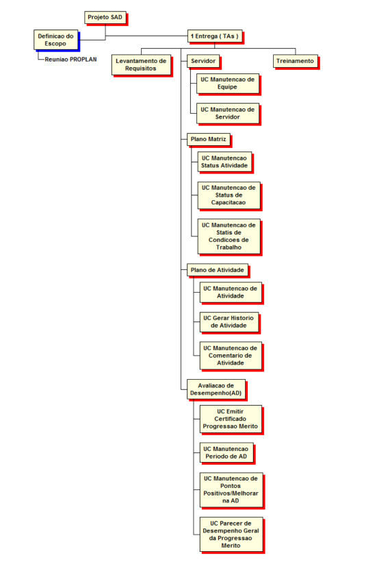
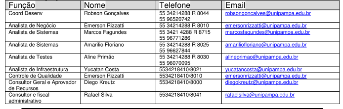

Proposta de Software
Sistema de Avaliação de Desempenho
Proposta de Software
O projeto se trata de um sistema de registro de atividades e avaliação de desempenho de docentes e Técnicos Administrativos da UNIPAMPA. A partir do registro prévio destas e com o registro de execução das mesmas, é que ocorre posteriormente a avaliação dos envolvidos. Para tanto o projeto subdivide-se em:
Planilha onde são inseridas as atividades da equipe.
Planilha gerada com base no Plano Matriz, com filtro de atividades que possuem chefes e equipes alocadas.
Tabelas simples de texto sem necessidade de validação, cada usuário tem a sua, sendo visível apenas quando o usuario ja avaliou e foi avaliado por outro.
Tela simples pertencente a cada funcionário, com sua auto-avaliação e com visibilidade de demais usuários que possuem a disposição botões de votação a favorecimento, ou não, de que o funcionário possa ascender seu nível profissional.
O projeto foi idealizado para execução em 69 dias, contendo duas entregas: A primeira entrega teria as funcionalidades de gestão da avaliação dos Técnicos Administrativos. A segunda entrega adicionaria as funcionalidades da gestão de avaliação dos Docentes.
Serão necessários espaços para realização dos treinamentos, computadores para acessar o sistema, ao menos um servidor para hospedar a aplicação, etc.
Todos os profissionais envolvidos fazem parte do NTIC - Núcleo de Tecnologia da Informação e Comunicação da UNIPAMPA. O projeto conta com os seguintes Recursos Humanos:
O projeto do sistema de avaliação de desempenho foi dividido em duas entregas. A primeira consistindo na entrega dos recursos necessários para a gestão de avaliação de desempenho dos TAS (Técnicos Administrativos). A segunda entrega por sua vez será responsável pelos recursos totais necessários para a gestão de avaliação de desempenho dos docentes. Estas etapas são organizadas da seguinte forma, definição de escopo, levantamento de requisitos, epic servidor, plano matriz, plano de atividade, availiação de desempenho (TAS), treinamentos, availiação desempenho docentes e treinamento.
Em relação aos responsáveis, as atividades de desenvolvimento serão realizadas pela equipe na NTIC, enquanto as atividades de definição e validação de requisitos serão realizadas pela equipa da PROPLAN. A organização da equipe de desenvolvimento se dá da seguinte forma:
Durante o processo de desenvolvimento poderão acontecer mudanças de escopo e adição de funcionalidades, desde que passem por uma avaliação de ambas as partes.
A comunicação se dará por videoconferências quinzenais entre as partes envolvidas. (NTIC e PROPLAN) Encontros presenciais serão marcados para homologação de versões teste do sistema.